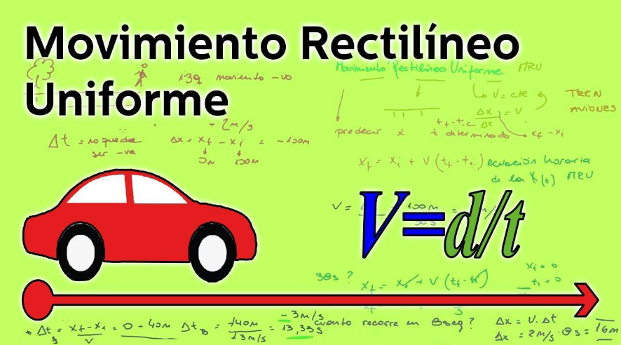
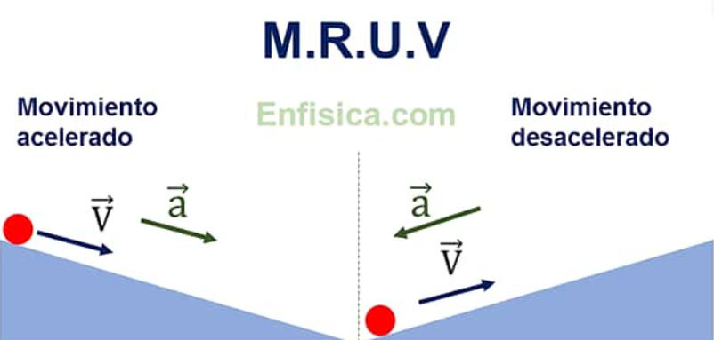

¿Qué es el movimiento rectilíneo uniforme?
El movimiento rectilíneo uniforme (M.R.U.) describe el desplazamiento de un objeto en una sola dirección con una velocidad y tiempo constante en una determinada distancia. En física, el movimiento rectilíneo uniforme puede ser observado dentro de un plano, en un eje de coordenadas, donde el movimiento es en línea recta desplazándose hacia una dirección. Es uniforme porque las variables de velocidad y tiempo en la recta es constante. Las fórmulas del movimiento rectilíneo uniforme contempla tres incógnitas: Velocidad constante (V), Distancia (d) y Tiempo (t). La fórmula principal teniendo de incógnita la velocidad constante es la siguiente:
¿Qué es el movimiento rectilinio uniforme variado?
Como su nombre indica, es un tipo de movimiento rectilíneo uniformemente variado, es decir el móvil se desplaza en una trayectoria recta y su velocidad varia de manera uniforme o constante en cada unidad de tiempo que transcurre, ya sea aumentando o disminuyendo, esto gracias a la acción de la aceleración.
Movimiento Rectilíneo Uniforme (MRU)
El MRU es un tipo de movimiento donde un cuerpo se desplaza en línea recta a velocidad constante.

Cálculo de Velocidad
La velocidad en MRU se obtiene dividiendo la distancia (d) entre el tiempo (t). Fórmula: v = d / t
Cálculo de Tiempo
El tiempo se calcula dividiendo la distancia (d) entre la velocidad (v). Fórmula: t = d / v
Cálculo de Distancia
La distancia se calcula multiplicando la velocidad (v) por el tiempo (t). Fórmula: d = v * t
Movimiento Rectilíneo Uniformemente Variado (MRUV)
El MRUV es un tipo de movimiento donde un cuerpo acelera o desacelera a una tasa constante.